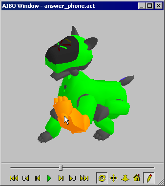

|
|
| Skitter - Chapter 9 - AIBO
Preview Window |
Contents of this website are freeware and/or copyrighted material, and may not be sold
under any circumstances.
Email: dogsbody@dogsbodynet.com
Home:
https://dogsbodynet.com
|
Table of Contents:
1.0
Introduction
2.0 Install
Skitter
3.0 Performance Files
4.0 Motion Editing
5.0 LED Editing
6.0 MIDI Sound Editing
7.0 Wave Sound Editing
8.0 The Reference Library
9.0 The AIBO Window
9.1 Preview Controls
9.2 Adjusting 3D View
9.3 Motion Editing within 3D View
10.0 Test Actions on AIBO
11.0 Upload Actions to AIBO
12.0 Specify Preferences
|
9.0 AIBO Preview
Window
The AIBO window is intended for
reviewing
performance skits on your PC before uploading them to AIBO, or writing
them to a memory stick.
It can also be used for editing AIBO's posture directly if you
like.
The AIBO Window is similar to the small motion editor preview.
However it is larger, and has controls for navigating the
performance -- similar to the Windows Media player.
Motion, Lights/LED's & Sound are synchronized together.
The "AIBO Window" can be enlarged full-screen size, although a 3D
accelerated video card might be required for good performance.
Toggle the AIBO Window on/off from "View Menu -> AIBO Window".
|
|
9.1 Preview Controls
The following AIBO preview controls are available:
- Move to Start. Set current position to
start of performance.
- Previous Keyframe. Previous
keyframe tab in motion editor.
- Previous Frame. Previous motion
frame.
- Start/Stop Playback.
Start/stop simulated playback of AIBO performance.
- Next Frame. Next motion frame.
- Next Keyframe. Next keyframe tab
in motion editor.
- Move to End. Set current position
to end of performance.
9.2 Adjusting 3D View
The AIBO preview can be rotated, moved &
zoomed. Click-n-drag with the mouse, or use the keyboard
arrow keys.
- Rotate. Trackball style
control. You can see AIBO preview from all angles.
- Pan. Repositions AIBO preview within
window. Does not change angle of view.
- Zoom. Zoom preview in/out.
- Home. Reset preview to default zoom &
view angle.
|
|
9.3 Motion Editing
within 3D View
Editing within the AIBO window is easy.
First select edit mode by clicking the pencil icon. 
Second, select a frame within the motion editor. Note
you cannot edit the first or last frames of a motion using the AIBO
window.
Lastly, move the mouse over AIBO's head, ears, mouth, legs, tail,
etc.., (target will become highlighted as shown), then click-and-drag!
Note: The preview can be still rotated, moved &
zoomed in edit mode. Just click somewhere off to the side,
or on AIBO's body.
|

|
|
|
|
Legalese: These programs are provided AS IS without any warranty, expressed or implied.
This includes without limitation the fitfulness for a particular purpose or
application. People using the software bear all risk
as to its quality and performance. The user of the software
is responsible for any damages whether direct, indirect, special,
incidental or consequential arising from a failure of these programs to operate in
any manner desired. Etc, etc...
"AIBO" is a registered trademark of Sony Corporation.
"AIBO Master Studio", "R-Code", and "Memory Stick" are trademarks of Sony Corporation.
|
|